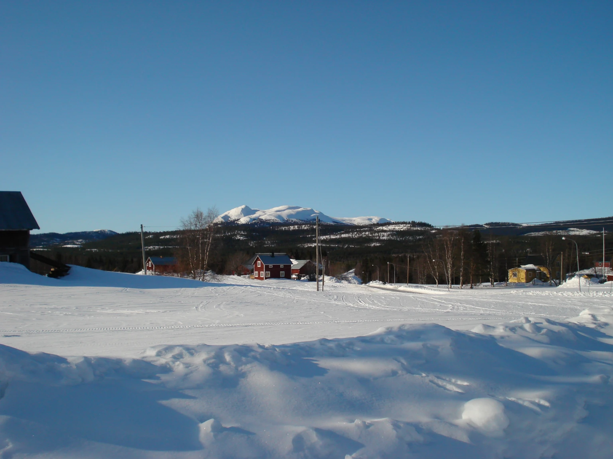
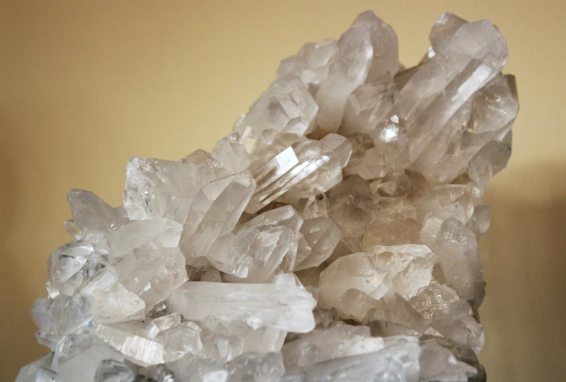

Olden är en liten by i de västjämtska fjällen. Den är ett utmärkt resmål för hela familjen. Här kan du bo i en mysig stuga, baka tunnbröd och bada bastu, uppleva fjällnatur och sällsynt flora, leta bergkristall i en nedlagd gruva, uppleva sydsamisk historia i Frankrike (utan att lämna Sverige), pröva tävlingslyckan med pimpelfiske och mycket annat.
Olden är en liten by i Offerdals socken i de västjämtska fjällen, nio mil nordväst om Östersund. En bild säger mer än tusen ord, och eftersom det kan vara ganska knepigt att hitta till byn, hänvisar jag till Google Maps som får visa vägen från Östersund till Olden.
I själva byn finns det två övernattningsmöjligheter. Antingen kan du hyra rum på Bystugan, ett vandrarhem som drivs av Oldens byalag, eller så kan du hyra en hel stuga på Opp på backen.
Opp på backen, som drivs av Toys fix & event, erbjuder även servering av mat och dryck. På Bystugan kan du boka in dig på bastubad, och det finns möjlighet att använda en fullt utrustad bakstuga om du vill baka tunnbröd.
Det närliggande fjället Oldklumpen med sin karaktäristiska kontur kan ses från hela Olden. Det är ett naturreservat och ett populärt resmål för vandrare, inte minst tack vare dess för fjällmiljö mycket sällsynta flora. I den så kallade Trädgården kan du få se växter såsom alm, kransrams och liljekonvalj.

En bit utanför Olden kan du hitta resterna av en kristallgruva med anor från 1700-talet. Kristall från den här gruvan användes under andra världskriget i optisk och teleteknisk industri. Gruvan är sedan dess nedlagd, men än idag finns det kvar bergkristall att hitta i dagbrottet. Att leta bergkristall är spännande både för stora och små.
Ungefär en mils bilväg väster om Olden hittar du den lilla byn Frankrike, som egentligen bara består av en enda gård. Byn grundades på 1800-talet, men markerna har brukats av sydsamer, troligtvis i tusentals år.
Byns enda gård, Frankrikegården, har haft många funktioner genom åren, däribland som pensionat. I dag är den dock privatbostad. Fortsätter du ännu en bit på vägen kommer du till den gamla kraftstationen och där öppnar fjällandskapet verkligen upp sig. Det är väl värt ett besök.
Sedan slutet av 1980-talet har Oldens byalag anordnat Oldpimpeln, en tävling i pimpelfiske som går av stapeln varje påskafton. Den drar flera hundra tävlanden, mycket tack vare de fina priserna. Det är en aktivitet för hela familjen; alla barn får pris, oavsett om de får napp.
Är du inte särskilt intresserad av att pimpla kan du köpa hamburgare och varm korv, värma dig med en kopp kaffe eller bara njuta av solen i den härliga jämtländska vårvintern.